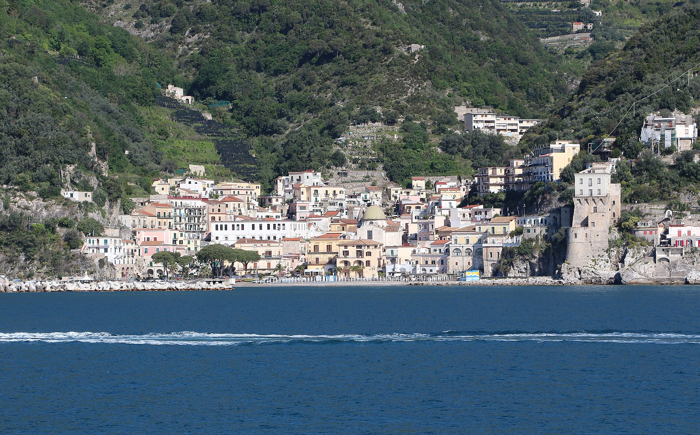

- One coastal road links a dozen towns, so a single base covers the whole coast
- The Tyrrhenian breeze makes 30 °C feel honest rather than punishing
- June and September give you the same weather with far fewer beds taken
Campania, Italy
The Amalfi Coast
- History
- Sun & sea
- Walking
Seasonal norms — highs 27–31 °C, sea 24–27 °C, 12–13 hours of sun, one to three rain days a month from June to August.
Amalfi was a maritime republic long before the postcard view: its ships, coin and maritime law tables shaped Mediterranean trade, and the cathedral crypt still holds the relics of St Andrew, brought from Constantinople in the early 1200s. The coast was inscribed as a cultural landscape because those terraces and towers were built by people, not by a resort developer.
Walk the Sentiero degli Dei high above the sea early in the morning, spend the hottest hours in a Ravello garden, and take the ferry between towns so the road never costs you an afternoon.